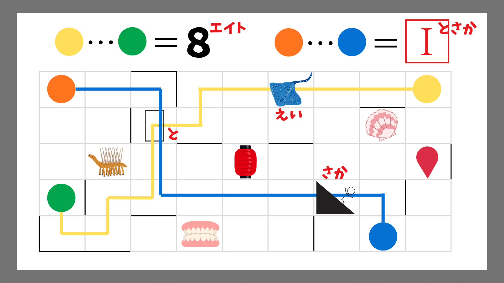
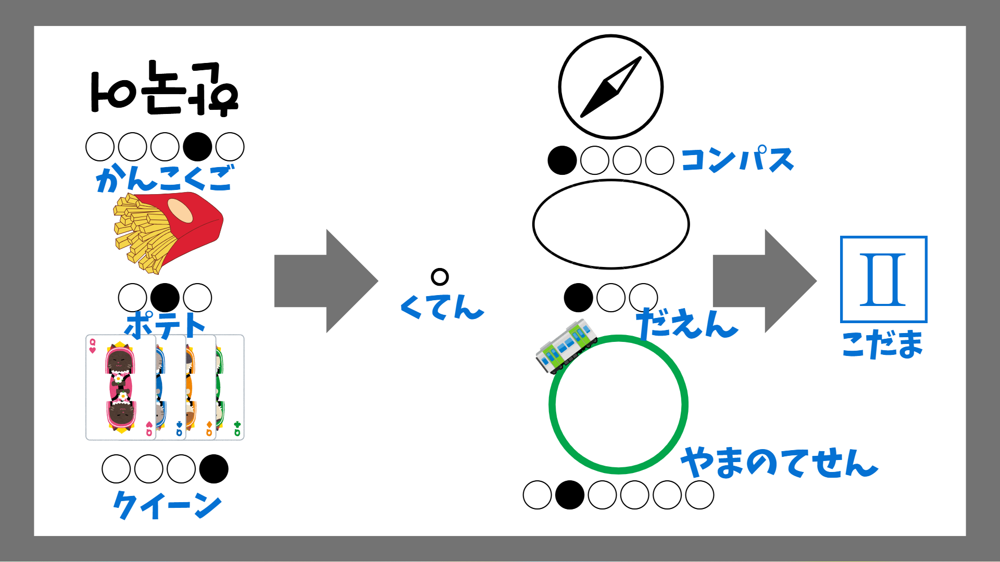
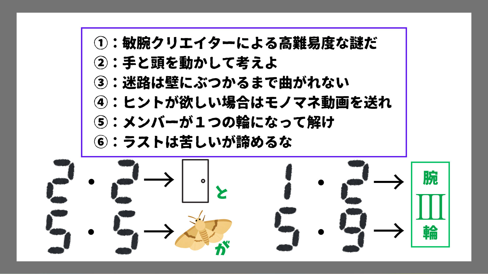
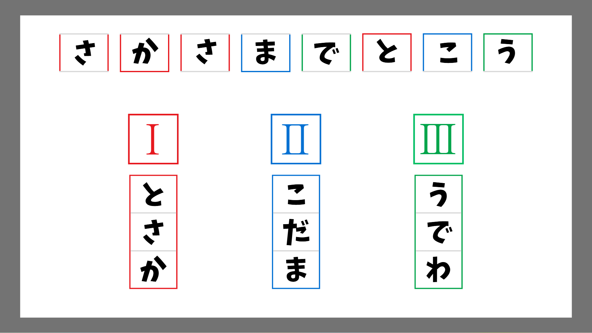
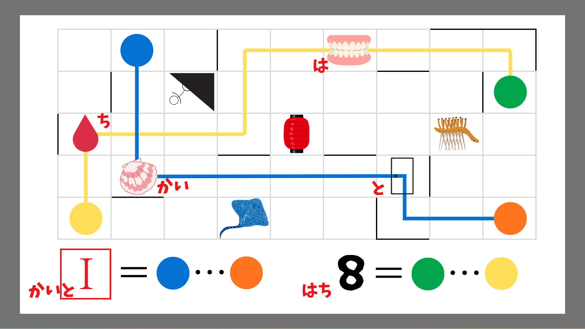
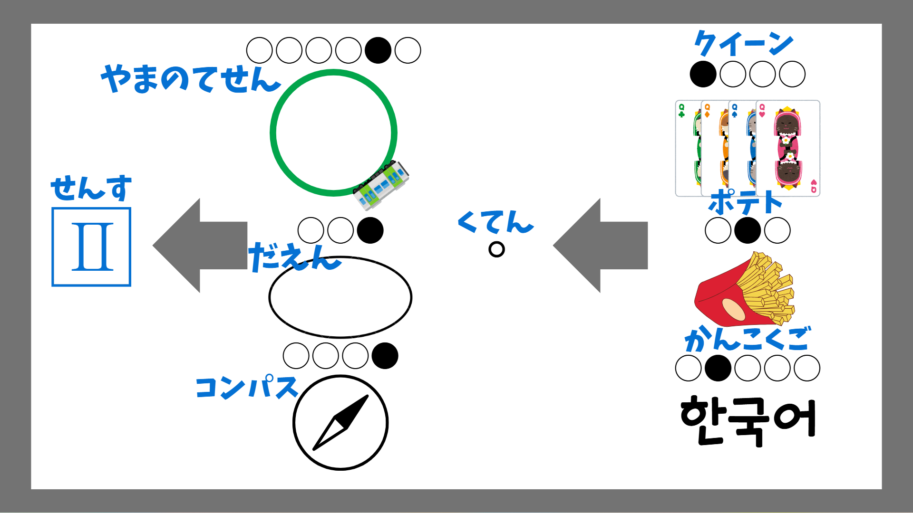
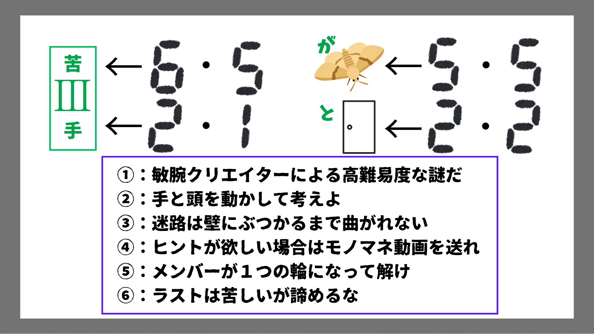
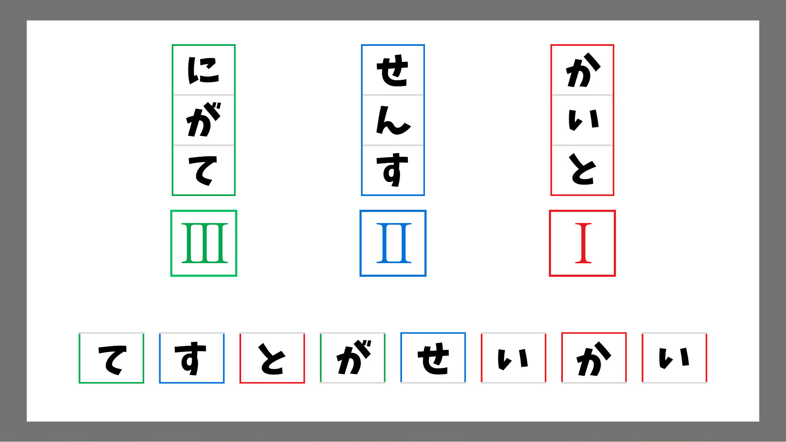
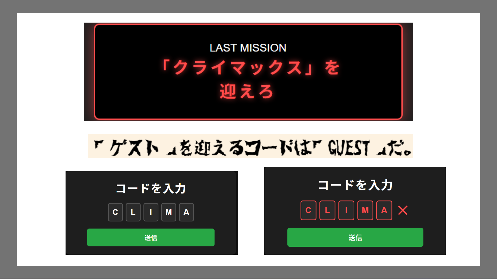

コードを入力
第１問

第２問

第３問

第４問

解説
1問目の解説

答え：とさか
ルールにもあったように壁にぶつかるまで曲がれない迷路です。左上には黄色と緑色を結ぶと数字の8となる例が示されています。実際に黄色から緑色まで辿ってみると、「えい」のイラストと「と」のイラストを通り、つなげると「エイト」となります。
同様にして橙色から青色まで辿ってみると、「と」と「坂」のイラストを通るので答えは「とさか」となります。
2問目の解説

答え：こだま
左に示されたイラストは上から「韓国語」「ポテト」「クイーン」です。それぞれを〇に当てはめた時に黒の部分だけを上から読むと「くてん」となります。
同様にして右を見ると、上から「コンパス」「だえん」「やまのてせん」となっており、黒丸の文字を読むと「こだま」となります。
3問目の解説

答え：うでわ
上の紫色の枠は最初に送られたルールの枠と一致しています。下にある二つのデジタル数字のうち１つ目はルールの番号、２つ目は文字数の番号を示しています。
実際にルール２の２文字目、５の５文字目はそれぞれ「と」と「が」になっています。
同様にしてルール１の２文字目、５の９文字目を読むと「腕」と「輪」になっているため、答えは「腕輪」です。
4問目の解説

答え：てすと
まずは示されたように１～３問目までの答えを埋め、上に示された部分を読むと「さかさまでとこう」となります。実はこれまでの問題は全て上下をさかさまにして解くと答えが変わるようになっていたのでした。

逆さまの1問目の答え：かいと
1問目を上下さかさまにすると、辿る色の順番が変わります。緑色から黄色に辿ると、「は」と「ち」のイラストを通ります。
同様に今度は青色から橙色に辿ると、「かい」と「と」のイラストを通るため答えは「かいと」に代わります。

逆さまの2問目の答え：せんす
2問目を上下さかさまにすると、拾う文字が変わります。例示は変わらず「くてん」となっています。
そうすると、今度は上から順に「せ」「ん」「す」を拾うことになり、答えは「せんす」です。

逆さまの3問目の答え：にがて
3問目をさかさまにすると、デジタル数字に変化する部分ができます。例に示された部分には変化はありません。
今回はルール６の５文字目、２の１文字目を読むと、「苦」「手」となっているため、答えは「にがて」となります。

最後に4問目も上下さかさまにし、解きなおして出た三つの「かいと」「せんす」「にがて」という答えを入れます。
そして、左下から対応する文字を当てはめると、「てすとがせいかい」となるため、答えは「てすと」となります。
LAST MISSIONの解説

LAST MISSONの内容は「クライマックス」を迎えろとなっている。ここで再び最初に送られたルールを見よう。
ルールには「ゲスト」を迎えるコードは「GUEST」だとある。したがって「クライマックス」を迎えるコードは「CLIMAX」なのではないかと予想できる。
しかし、コードの入力は5文字までで一文字足りない。そこで、一度状態で送信ボタンを押してみると、赤いバツが表示され、まるで「CLIMAX」の文字のように見えることがわかる。この状態で再度送信ボタンを押すと、クリア画面を見ることができる。